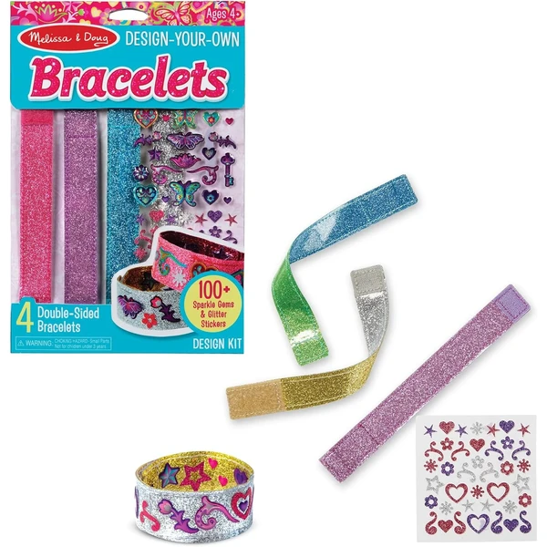
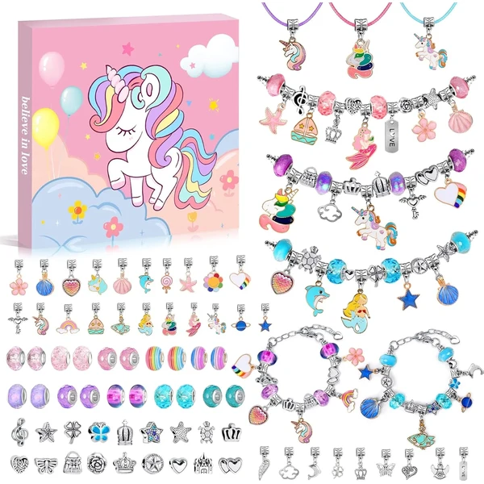

JOYIN Rocas para Pintar
Un kit con 10 rocas y todo tipo de pinturas (estándar, metálicas y que brillan en la oscuridad), más gemas y pegatinas para decorar cada piedra a su gusto.
⭐ ¿Por qué nos gusta?
- ✔ Pinturas metálicas y que brillan en la oscuridad.
- ✔ Incluye gemas y pegatinas para decorar.
- ✔ 10 rocas, suficiente para varias sesiones.
💬 Lo que más destacan las familias
Muchos padres coinciden en que las pinturas que brillan en la oscuridad son el gran acierto de este kit, porque el resultado se puede seguir disfrutando por la noche una vez terminado. Que las rocas se puedan pintar de tantas formas distintas también da para varias tardes de manualidades sin repetirse.
Ver en Amazon

Melissa & Doug Diseña tus Propios Brazaletes
Un kit con 4 pulseras reversibles y más de 100 pegatinas y gemas reutilizables, para diseñar combinaciones distintas una y otra vez sin necesidad de comprar más material.
⭐ ¿Por qué nos gusta?
- ✔ Pulseras reversibles, se pueden rehacer sin límite.
- ✔ Más de 100 pegatinas y gemas incluidas.
- ✔ Fomenta motricidad fina y coordinación mano-ojo.
💬 Lo que más destacan las familias
Los compradores valoran especialmente que las pulseras se puedan rehacer una y otra vez, así que el kit no se agota tras la primera tarde de uso. Combinar pegatinas y gemas para inventar diseños nuevos es lo que más suele repetir el niño por su cuenta.
Ver en Amazon

Clementoni Taller de Bolígrafos
Un laboratorio creativo para diseñar y personalizar bolígrafos propios con distintos accesorios y decoraciones, con un soporte práctico para exponer las creaciones terminadas.
⭐ ¿Por qué nos gusta?
- ✔ Resultado final útil: un bolígrafo para usar de verdad.
- ✔ Gran variedad de accesorios para personalizar.
- ✔ Incluye soporte para exponer el resultado.
💬 Lo que más destacan las familias
Una de las cosas más comentadas es el orgullo que sienten los niños al poder usar de verdad el bolígrafo que han decorado ellos mismos, en vez de guardarlo sin más. El soporte para exponerlo también ayuda a que quieran enseñarlo a toda la familia.
Ver en Amazon

EFO SHM Kit de Fabricación de Joyas
Un kit con colgantes de metal, cubiertas de resina transparente y más de 250 láminas con imágenes para colorear y convertir en pulseras y collares personalizados.
⭐ ¿Por qué nos gusta?
- ✔ Más de 250 láminas de imágenes para colorear.
- ✔ Combina pintura con fabricación de joyas.
- ✔ Resultado final: pulseras y collares para lucir.
💬 Lo que más destacan las familias
Entre los comentarios más habituales aparece que la cantidad de láminas da para muchísimas sesiones sin quedarse sin ideas nuevas. Poder llevar puesta la pulsera o el colgante que han hecho ellos mismos suele ser lo que más ilusión les hace.
Ver en Amazon

BONNYCO Pintar por Números Animales Marinos
Un pack de 3 lienzos para pintar por números con temática de animales marinos, con pinturas que brillan en la oscuridad y colgadores para exponer el resultado en la pared.
⭐ ¿Por qué nos gusta?
- ✔ 3 lienzos, para pintar en varias sesiones.
- ✔ Incluye pintura que brilla en la oscuridad.
- ✔ Colgadores incluidos para exponer el cuadro.
💬 Lo que más destacan las familias
No es raro encontrar comentarios sobre lo satisfactorio que resulta ver el cuadro terminado colgado en la pared, lo que anima al niño a completar los tres lienzos. Pintar de noche con la pintura que brilla en la oscuridad también suele ser un momento que piden repetir.
Ver en Amazon

Kazzley Kit de Creación de Bolígrafos
Un kit con más de 55 piezas para montar hasta 15 bolígrafos personalizados, con tapas decorativas y accesorios variados para combinar diseños distintos.
⭐ ¿Por qué nos gusta?
- ✔ Hasta 15 bolígrafos distintos con el mismo kit.
- ✔ Más de 55 piezas y accesorios incluidos.
- ✔ Entrena paciencia y atención al detalle.
💬 Lo que más destacan las familias
Se repite bastante el comentario de que poder montar hasta 15 bolígrafos distintos mantiene entretenidos a los niños durante mucho más tiempo que otros kits similares. Regalar los bolígrafos que hacen de más también les hace especial ilusión.
Ver en Amazon

WEVOL Kit para Hacer Pulseras
Un set de 74 piezas de joyería con temáticas variadas (princesa, unicornio, sirena, concha) para combinar cuentas y colgantes en pulseras y collares personalizados.
⭐ ¿Por qué nos gusta?
- ✔ 74 piezas con temáticas variadas.
- ✔ Correas ajustables para distintos tamaños de muñeca.
- ✔ Fácil de montar, sin herramientas complicadas.
💬 Lo que más destacan las familias
Quienes lo han probado destacan que las temáticas de princesas, unicornios y sirenas hacen que cada niño encuentre su combinación favorita sin esfuerzo. Que sea tan fácil de montar sin herramientas también se agradece para que jueguen con autonomía desde el principio.
Ver en Amazon